Audience: Experienced HelloZenno devs
Reading time: ~10 minutes
Prerequisites: SvelteKit pages, Flask views, Peewee models, Supabase auth
Summary warming → deck generation. Summary ranks; generation fills.
Partial results are OK; durations expose the cost.
Selection by sourcefile slug; audio ensured.
Unauthenticated: reuse-only; authenticated: LLM+TTS.
Background warming and preloading reduce perceived latency.
Per-sourcefile priority words drive a focused, audio-first deck with staged reveal (audio → sentence → translation) and simple continuation heuristics.
We want a fast, confidence-building session that turns a single sourcefile into a short, audio-first practice set. The experience should feel immediate (reuse-first), with smart top-up when signed in.
Under 1s to “Practice ready” when reuse suffices; graceful 401 with useful content when it doesn’t; consistent audio quality; predictable card count.
lang, dir, slug, optional top.lemmas[] with difficulty_score, meta.durations, meta.partial.sentences[] with audio_data_url, plus meta.reused_count, meta.new_count, and durations.desired = K
reused = min(K, persisted_for_lemmas)
remaining = desired - reused
if remaining <= 0:
return reused_only
if unauthenticated:
return 401 with reused_only
# authenticated
new_items = llm_generate(remaining, level)
persist(new_items); ensure_audio(new_items)
return reused + new_itemsSetup: top‑K=5; persisted sentences available=3 across target lemmas.
401 with those 3 sentences and authentication_required_for_generation=true.{
"sentences": [
{ "sentence": "Έχω ένα βιβλίο.", "translation": "I have a book.", "used_lemmas": ["βιβλίο"], "audio_data_url": "/api/.../audio?variant_id=456" }
],
"meta": { "reused_count": 3, "new_count": 0, "durations": { "reuse_s": 0.04, "total_s": 0.07 }, "authentication_required_for_generation": true }
}Setup: top‑K=5; persisted=2; user signed in.
reuse_s, llm_s, audio_total_s, total_s.{
"meta": { "reused_count": 2, "new_count": 3, "durations": { "reuse_s": 0.03, "llm_s": 1.2, "audio_total_s": 0.8, "total_s": 2.1 } }
}Sessions intentionally revisit previously seen lemmas while introducing a manageable number of new ones. Over time, users cycle back to concepts with slightly increased challenge or fresh contexts.
Flow from summary warming to deck generation:
Source: Mermaid source
Summary collects lemmas, bulk fetches metadata, fills within a time budget, scores by difficulty, returns top-K with durations and partial flag. Generate reuses persisted sentences (ensuring audio); if more needed and authed, a single LLM call produces sentences which are persisted and get audio variants.
def _difficulty_score(metadata: dict) -> float:
commonality = metadata.get("commonality"); guessability = metadata.get("guessability")
c = commonality if isinstance(commonality, (int, float)) else 0.5
g = guessability if isinstance(guessability, (int, float)) else 0.5
return (1.0 - g) + (1.0 - c)@learn_api_bp.route("/sourcefile/<lang>/<dir>/<slug>/summary", methods=["GET"]) # auth optional
@learn_api_bp.route("/sourcefile/<lang>/<dir>/<slug>/generate", methods=["POST"]) # auth optional# Unauth fast-path: reuse-only with 401
if remaining > 0 and not getattr(g, "user", None):
return jsonify({"sentences": existing_items, "authentication_required_for_generation": True, ...}), 401// GET summary
await apiFetch({ routeName: RouteName.LEARN_API_LEARN_SOURCEFILE_SUMMARY_API, params: { target_language_code, sourcedir_slug, sourcefile_slug }, options: { method: 'GET' }, searchParams: { top: settingTopK } });
// POST generate with 401 fallback
try { await apiFetch({ routeName: RouteName.LEARN_API_LEARN_SOURCEFILE_GENERATE_API, ... }); } catch (e: any) { if (e?.status === 401) { /* use e.body.sentences */ } }learn_sourcefile_summary_api, learn_sourcefile_generate_apifetchSummary, preparePracticeInBackground, startPracticeLEARN_API_LEARN_SOURCEFILE_SUMMARY_API, ..._GENERATE_API{"lemmas":[{"lemma":"string","translations":["string"],"difficulty_score":0.0}],"meta":{"total_candidates":0,"returned":0,"durations":{"total_s":0.0},"partial":false,"counts":{}}}{"sentences":[{"sentence":"string","translation":"string","used_lemmas":["string"],"language_level":"A1","audio_data_url":"/api/lang/sentence/el/123/audio?variant_id=456"}],"meta":{"reused_count":0,"new_count":0,"durations":{"reuse_s":0.0,"llm_s":0.0,"audio_total_s":0.0,"total_s":0.0}}}python scripts/local/learn_cli.py summary el 251013 1000015419-word-matching-jpg
export AUTH_BEARER="<SUPABASE_JWT>"
python scripts/local/learn_cli.py generate el 251013 1000015419-word-matching-jpg --lemmas βιβλίο,μουσική --num 3 --level A1frontend/src/routes/language/[target_language_code]/source/[sourcedir_slug]/[sourcefile_slug]/learn/+page.sveltebackend/views/learn_api.pyfrontend/src/lib/generated/routes.tsbackend/prompt_templates/generate_sentence_flashcards.jinjaLast updated: 2025-10-26